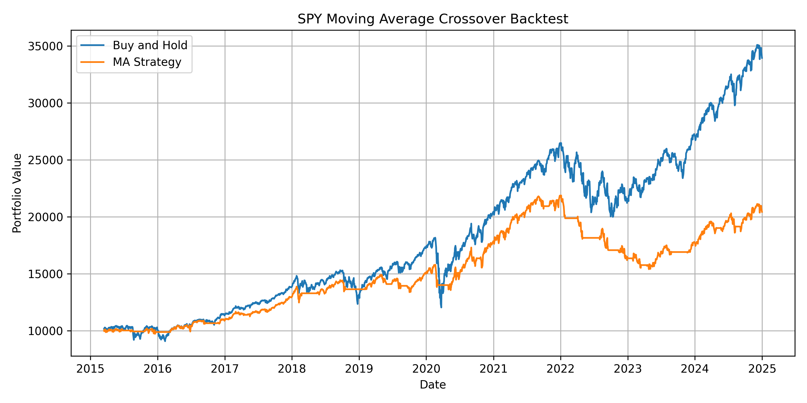
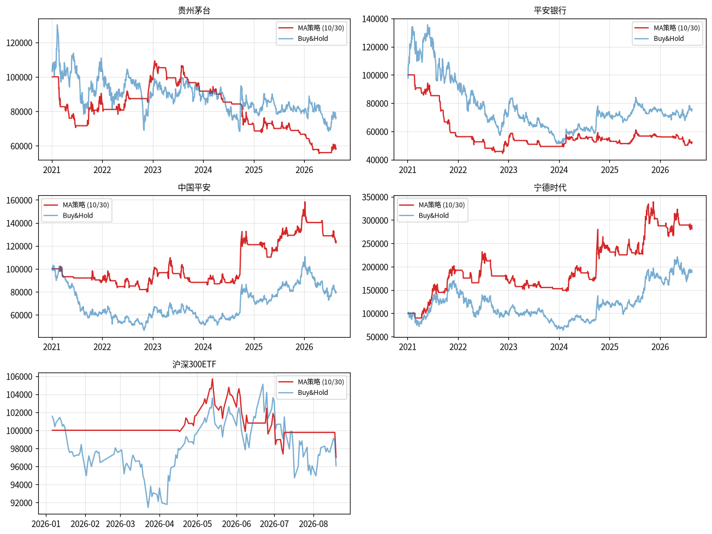

Portfolio Project Hub
Quant Research Lab
This page presents three related quantitative finance projects. The first project explores factor research using Jupyter Notebook, Shanghai stock-market style simulation data, CSV files, and reports. The second project extends the same research logic into a Python backtesting workflow. The third is my ongoing learning journey: a growing collection of A-share research notebooks I studied, reran, and finally built my own strategy on top of.
Project 1
AI-Assisted A-Share Single Factor Analysis
This was my first quantitative research project. I built a Jupyter Notebook workflow for single-factor analysis using stock-market simulation data, CSV files, Python scripts, and generated reports.

Goal
Test whether a factor has useful predictive power for stock returns.
Workflow
Load CSV data, clean factor values, align returns, calculate IC, and report results.
Output
Notebook, Python script, HTML report, charts, and analysis notes.
What this project demonstrates
This project demonstrates the research side of quant work: preparing data, checking factor quality, creating visual evidence, and explaining whether a signal is useful. It is not just a webpage display; the buttons below open real files from the project.
Project 2
Quant Moving Average Crossover Backtest
This project extends the same quant-research mindset into a complete Python backtesting pipeline. It downloads historical SPY price data, generates trading signals, applies transaction costs, calculates performance metrics, and exports CSV and chart results.

Strategy logic
The strategy uses a 20-day and 50-day moving average crossover. It holds SPY when the short moving average is above the long moving average, and moves to cash when the short moving average is below the long moving average.
Project 3
My Quant Learning Journey — Research Notebooks
I am learning quantitative finance by studying real A-share research notebooks, running them end to end, and then writing my own strategy. Every file below is a real Jupyter notebook you can click and open. My own notebook is marked ★ my work.
★ My Work
MA Crossover Strategy Backtest
The strategy I designed and backtested myself: a 10/30 moving-average crossover with optional RSI filter on 5 A-shares, using free baostock data. Includes total return, annualized return, Sharpe ratio, max drawdown, win rate, and Buy&Hold comparison.
Study Notes
Equity-Industry Resonance & Momentum Model
A factor model that combines equity-industry resonance with momentum to select stocks. Shows how industry relationships feed into factor design.
Study Notes
HMM Market Timing for A-Share Indices
Uses a Hidden Markov Model to time the CSI 300, CSI 500, and SSE 50 indices — a classic machine-learning approach to regime detection.
Study Notes
Alpha Information in Volume Spikes
Researches whether abnormal volume spikes carry predictive information for future returns — a pure alpha/factor study.
Study Notes
Bayesian Optimization for Trading Strategies
Applies Bayesian hyperparameter optimization to tune trading strategy parameters instead of brute-force grid search.
Study Notes
Key Market Timing Momentum Strategy
A momentum-based market timing approach for timing entries and exits ("反弹动量") on A-share data.
Study Notes
Volume-Weighted Reversal for Index ETFs
A volume-weighted mean-reversion strategy applied to index ETFs, exploring short-term reversal effects with volume as a weighting factor.

My strategy vs Buy&Hold (2021 → now)
How I'm learning
My method is simple: read a research notebook, rerun it with real data, take notes, and then try to build something of my own. The MA-crossover backtest above is the first strategy I wrote and evaluated end to end — my next step is adding transaction costs, then moving from paper trading on Binance to automating the pipeline with Freqtrade.
Connection
How the Two Projects Are Related
Research the Signal
The A-share project focuses on testing whether a financial factor contains useful information.
Build Trading Logic
The backtest project turns a trading idea into executable Python logic.
Evaluate Performance
Both projects produce evidence: reports, CSV files, metrics, charts, and code.
Real Clickable Outputs